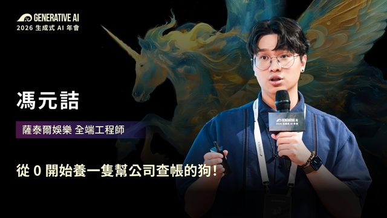

🎃 小南瓜數位筆記
影片圖文報告典藏庫——把演講、教學、競品影片，變成一眼看懂的圖文重點。
共 9 篇｜更新於 2026-08-31
🎤 2026 Generative AI 年會 8 篇
GAI Conf 年會演講的圖文筆記

從 0 開始養一隻幫公司查帳的狗！
馮元詰（薩泰爾娛樂 全端工程師）
892 天把人工報帳變成跟 AI 說一句話就查完帳。但他們不是一開始就想做 AI——統一命名才是真正的地基。
閱讀 2026-08-28

從 Vibe Coding 到真正可以上線的產品：你還差了什麼？
林沅霖（Zeabur 創辦人）
酸民說「這就是小玩具」，其實在提醒六件事：安全、擴展、資料、上線、可觀測、可維護。每件都附可直接複製的 Prompt，共 18 組。
閱讀 2026-08-28

Vibe Coding 是寫程式還是開盲盒
高見龍（五倍學院 · Anthropic 社群大使）
同一句話喊兩次結果不一樣，因為 AI 只能猜你的意圖。解法是 SDD：動手前先講清楚。附一段零安裝、可直接複製的提示詞全文。
閱讀 2026-08-28

Harness Engineering @ PicCollage
Jocelin Ho（PicCollage 工程經理）
AI 像辛普森家庭那個天真角色——本質不壞但需要引導。三階段框架：驗證→循環優化→解放創意。工程師工作量降三成、功能產出快十倍。
閱讀 2026-08-28

讓你的 Service 偷偷變聰明
Andrew Wu（91APP 首席架構師）
把 AI 放進自家產品會踩到的坑：關鍵不是挑模型而是挖出專家的 Context；安全不能靠交代 AI，要用系統邊界擋；新問題只能自己練。
閱讀 2026-08-27

駕馭工程必須熟知的兩三事
Will 保哥（多奇數位創意 技術總監）
一個老闆的實戰與帳單：工具少即是多（15→2 快 3.5 倍）、一個工程師一天燒 3.7 億 token、公司月費 15000 美金到週費 13 美金。驗證是 Harness 的心臟。
閱讀 2026-08-27

給 Agent 開發者的 Harness + Loop Engineering
張文鈿 ihower（愛好資訊科技 AI Engineer）
AI 最常見的失敗是「沒做完卻宣稱完成」。這場把「怎麼盯住 AI」拆成四個可以插入回饋的時間點：工具內、兩次呼叫之間、每輪結束、整個重來。
閱讀 2026-08-27

從 46 分寫到 90 分 — AI 代理人寫作
李慕約（Generative AI 年會 策展人）
把「請 AI 寫文章」做成流水線：指令×脈絡×工具。餵更少反而更好、刪除比補強難、多 Agent 要有可觀測儀表板。
閱讀 2026-08-18
📺 YouTube 教學 1 篇
YouTube 影片的圖文重點整理